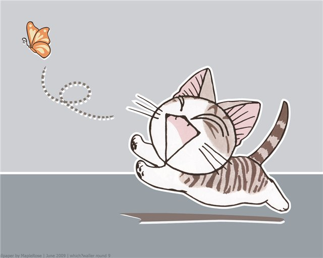

<!DOCTYPE HTML>
<!--
Title:
Сдвиг карты для балуна и балуна-панели в большом контейнере с картой

Description:
Проверяем опцию сдвига при открытии балуна и балуна-панели в большом контейнере с картой.
Памятка по терминам: https://wiki.yandex-team.ru/eva/testing/Projects/maps-api/

Components:
mobile

Estimated time:
120000

Precondition:
Открыть ссылку ${currentPagePath}

Step:
  Action:
  Осмотреть карту и элементы на ней.

  Expectation:
  Карта отобразилась, со спаном СПб.
  Вверху слева имеется кнопка "panel/balloon".
  На спане карты три метки коллекций(желтая, красная, зеленая).
  Внизу карты открыта панель балуна с заголовком: "Кронверк Синема"; телом: эмблемой "Кронвер синема", номером телефона, данными о сеансах; футером: "Информация предоставлена: TimeOut".
  С правой стороны имеется кнопка закрытия панели балуна.

Step:
  Action:
  Выполнить тап в желтую метку.

  Expectation:
  Происходит смещение спана, внизу карты открывается панель балуна с картинкой котенка.
  Справа имеется кнопка закрытия и скрол полоса для просмотра всего содержимого панели.

Step:
  Action:
  Выполнить тап в зеленую метку.

  Expectation:
  Происходит смещение спана, внизу карты открывается панель балуна с текстом стихотворения "Мой дядя самых честных правил...".
  Справа имеется кнопка закрытия и скрол полоса для просмотра всего содержимого панели.

Step:
  Action:
  Выполнить тап в красную метку.

  Expectation:
  Происходит смещение спана, внизу карты открывается панель балуна с Кронверк Синема, аналогичная первому шагу.

Step:
  Action:
  Выполнить два тапа в кнопку "panel/balloon".
  
  Expectation:
  Панель балуна пропадает.
  На месте метки открывается балун с заголовком: "Кронверк Синема"; телом: эмблемой "Кронвер синема", номером телефона, данными о сеансах; футером: "Информация предоставлена: TimeOut".
  Имеется кнопка закрытия панели балуна.
  
Step:
  Action:
  Тап в желтую метку на карте.
  
  Expectation:
  Предыдущий балун метки закрылся.
  Спан карты смещается для открытия балуна.
  На месте метки появляется балун с картинкой котенка.
  В балуне имеются вертикальная и горизонтальная скрол полоса для просмотра всего содержимого балуна.
  Имеется кнопка закрытия балуна.
  
Step:
  Action:
  Закрыть балун тапом в крестик.
  Выполнить тап в зеленую метку.

  Expectation:
  Балун желтой метки закрылся.
  Спан карты смещается для открытия балуна.
  На месте метки появляется балун с текстом стихотворения "Мой дядя самых честных правил...".
  Справа имеется кнопка закрытия и скрол полоса для просмотра всего содержимого балуна.
-->
<html>
<head>
    <title></title>
    <meta http-equiv="Content-Type" content="text/html; charset=utf-8"/>

    <meta name="viewport"
          content="width=device-width, initial-scale=1.0, minimum-scale=1.0, maximum-scale=1.0, user-scalable=no"/>
    <script src="../../helper.js"></script>
    <script type=text/javascript>

        Api('init');

        function init(ymaps) {
            var map = myMap = new ym.Map('map', {
                        center: [60, 30.2],
                        zoom: 9,
                        controls: ["fullscreenControl"]
                    }, {
                        balloonPanelMaxMapArea: Infinity,
                        geoObjectOpenEmptyBalloon: true
                    }),
                    imageLarge = '',
                    content = 'Россия, Московская область<br/>\
                                Поселок Петушки',
                    txt = 'Мой дядя самых честных правил,<br/>\
                            Когда не в шутку занемог,<br/>\
                            Он уважать себя заставил<br/>\
                            И лучше выдумать не мог.<br/>\
                            Его пример другим наука;<br/>\
                            Но, боже мой, какая скука<br/>\
                            С больным сидеть и день и ночь,<br/>\
                            Не отходя ни шагу прочь!<br/>\
                            Какое низкое коварство<br/>\
                            Полуживого забавлять,<br/>\
                            Ему подушки поправлять,<br/>\
                            Печально подносить лекарство,<br/>\
                            Вздыхать и думать про себя:<br/><br/>\
                            Так думал молодой повеса,<br/>\
                            Летя в пыли на почтовых,<br/>\
                            Всевышней волею Зевеса<br/>\
                            Наследник всех своих родных.<br/>\
                            Друзья Людмилы и Руслана!<br/>\
                            С героем моего романа<br/>\
                            Без предисловий, сей же час<br/>\
                            Позвольте познакомить вас:<br/>\
                            Онегин, добрый мой приятель,<br/>\
                            Родился на брегах Невы,<br/>\
                            Где, может быть, родились вы<br/>\
                            Или блистали, мой читатель;<br/>\
                            Там некогда гулял и я:<br/>\
                            Но вреден север для меня.';

            var log = new Log();
            addGrid(myMap);

            log.info('Balloon panel blocks the placemark after autopan.');

            var placemark1 = new ymaps.GeoObject({
                geometry: {
                    type: "Point",
                    coordinates: [60, 30.5]
                }, properties: {
                    balloonContent: txt,
                    hintContent: 'text'
                }}, {
                preset: 'islands#greenIcon',
                draggable: true,
                openBalloonOnClick: true,
                balloonPanelMaxHeightRatio: 0.3
            });

            var placemark2 = new ymaps.GeoObject({
                geometry: {
                    type: "Point",
                    coordinates: [60, 30.2]
                }, properties: {
                    balloonContentHeader: '<font size=3><b><a href = "http://www.yandex.ru">Кронверк Синема</a></b></font>',
                    balloonContentBody: ' <br/> ' +
                            'Сеть кинотеатров. тел. +7(821)350-24-24<br/><b>Ближайшие сеансы</b> <br/> Сеансов нет.',
                    balloonContentFooter: '<font size=1>Информация предоставлена: TimeOut</font>',
                    hintContent: 'Кронверк'
                }}, {
                preset: 'islands#redIcon',
                draggable: true
            });

            var placemark3 = new ymaps.GeoObject({
                geometry: {
                    type: "Point",
                    coordinates: [59.9, 30]
                }, properties: {
                    balloonContent: imageLarge,
                    hintContent: 'Кронверк'
                }}, {
                preset: 'islands#yellowIcon',
                draggable: true,
                openBalloonOnClick: true
            });

            var placemark4 = new ymaps.GeoObject({
                geometry: {
                    type: "Point",
                    coordinates: [59.9, 30]
                }, properties: {
                    balloonContent: imageLarge,
                    hintContent: 'Кронверк'
                }}, {
                preset: 'islands#yellowIcon',
                draggable: true,
                openBalloonOnClick: true
            });

            map.geoObjects.add(placemark1).add(placemark2).add(placemark3);
            placemark2.balloon.open();

            var preventButton = new ymaps.control.Button({data: {content: 'panel/balloon'}, options: {selectOnClick: true, maxWidth: 150}});

            // Change panelMaxMapArea option. Infinity value - panel mode, zero value - balloon mode.
            preventButton.events
                    .add('select', function () {
                        placemark1.options.set('balloonPanelMaxMapArea', Infinity);
                        placemark2.options.set('balloonPanelMaxMapArea', Infinity);
                        placemark3.options.set('balloonPanelMaxMapArea', Infinity);
                    })
                    .add('deselect', function () {
                        placemark1.options.set('balloonPanelMaxMapArea', 0);
                        placemark2.options.set('balloonPanelMaxMapArea', 0);
                        placemark3.options.set('balloonPanelMaxMapArea', 0);
                    });

            myMap.controls
                    .add(preventButton);
        }
    </script>
    <style>
        html, body, #map {
            width: 100%;
            height: 100%;
            margin: 0;
            padding: 0;
        }
    </style>
</head>
<body>
<div id="map"></div>
</body>
</html>